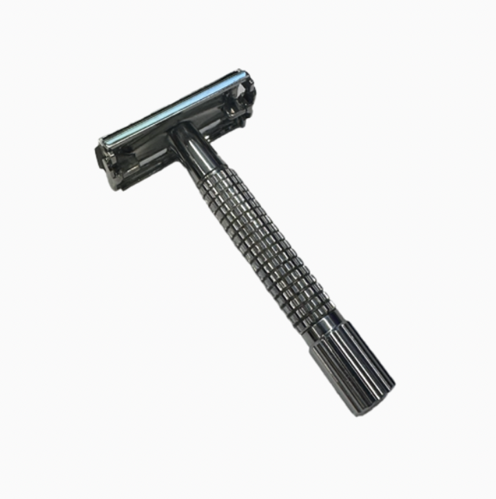

Razor Blade

Van Der Hagen 85mm Safety Razor
Size
4.5*1.5*0.5 inches
Timeline
Owned more than a year
Released in 2013-2014
Description
Also carried in a toiletry bag. Since I almost always have been shaving my facial hair, the newly grown ones which sticks out are personally irritating. Here, I find it better to cut off rather than sliding the surface, thus I use a traditional double edge razor. Carrying this blade helps me solve that issue wherever I am.
Memories
It contains photographs, music, notes, and messages from different periods of my life. I often end up looking through old photographs without intending to.
Dreams
All I hope is that this object will continue to serve its purpose.
Wonders
I don't have any remaining uncertainty yet, I feel like I have figured out all about it. Might change along the line.